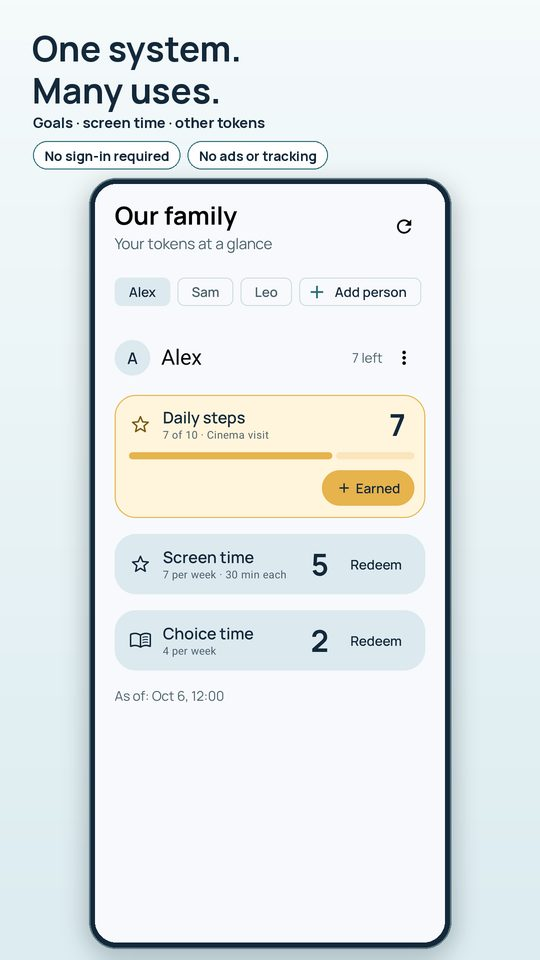
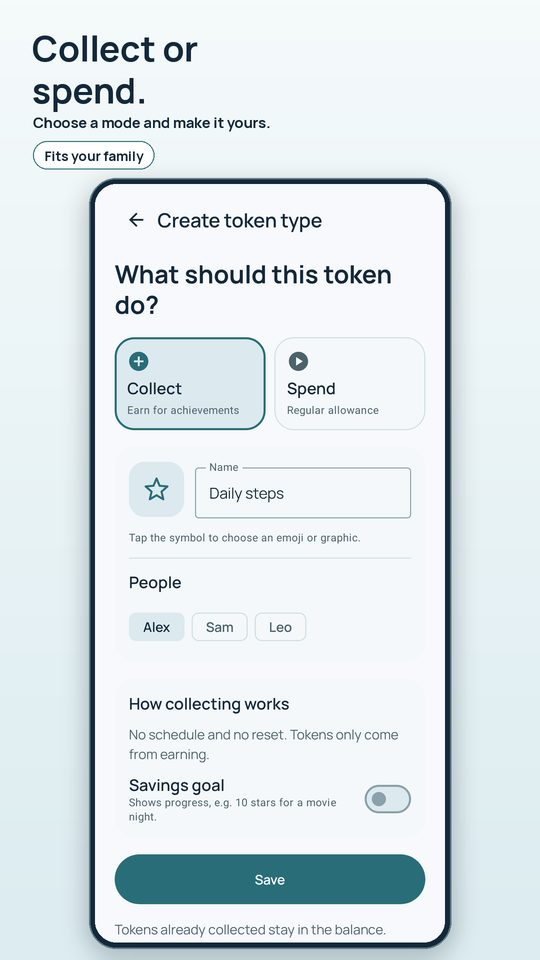
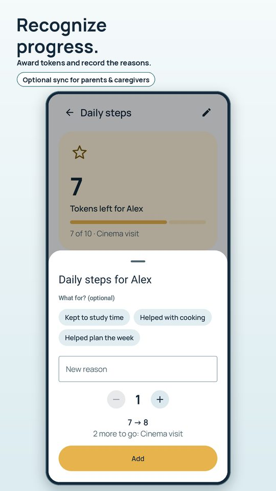
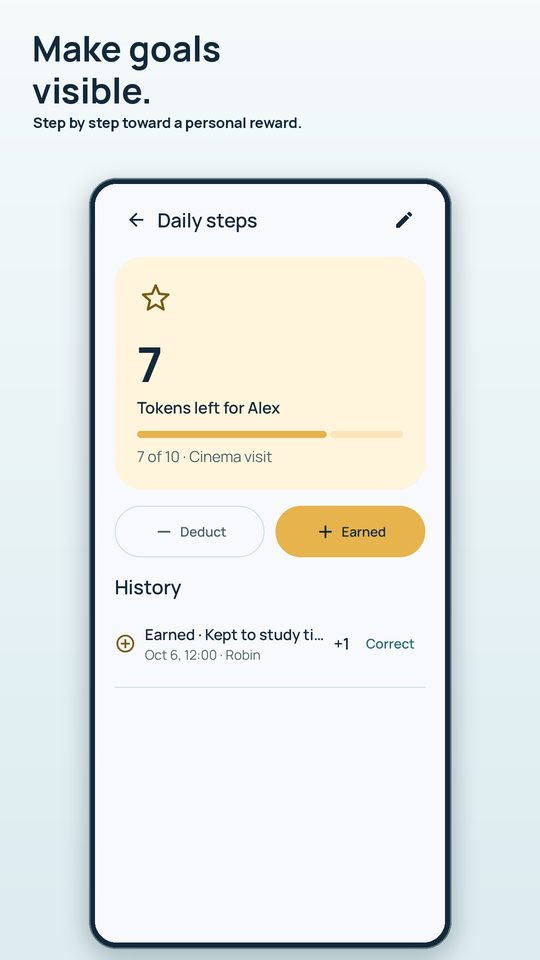
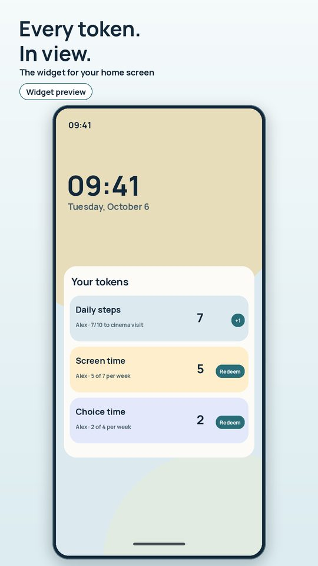

Token System
Android app for families and residential groupsScreen time, helping out, homework goals: keep your agreements in one place. Every child sees what is left on a widget or on their own tablet.
Token System is in closed testing on Google Play. Send a short mail and you get an invitation.





Daily, weekly or monthly, with or without carry-over. For example 7 tokens a week, each worth 30 minutes, with a countdown.
Collect tokens for helping out or study time, set a goal with a reward and watch the progress.
See balances and redeem straight from your home screen, optionally with a confirmation first.
Children see big coins with their own balance. They can look, not change.
Connect the second phone by QR code, with or without a Google account. Changes are saved offline and sent later.
What were tokens earned for, what were they spent on? Accidental entries can be corrected.
How it works
- Add a child and a rule. Enter a name, pick a template (collect or spend) and adjust the amount.
- Hand out tokens. Budgets refill automatically; for collecting you award tokens yourself.
- Redeem. With one tap in the app or the widget. The child sees the new balance right away.
For residential groups and teams
Several caregivers see the same balance, each child has their own, and the history shows who booked what and when. If you support a group and would like to try the app in a pilot, write to mobdev@tuta.com.
Private by design
No ads, no tracking or analytics SDKs, no selling of data. Use it fully local and offline, or optionally sync anonymously or with a Google account; synced data is stored in the EU (Ireland). You can delete your account and data inside the app. See the privacy policy.
FAQ
Do I need an account?
No. Local mode works without an account and without internet. Optional sync lets a second parent share the balances, also without a Google account.
Does the app lock the phone or tablet?
No. Token System records your agreements and reminds you when time is up. It does not block other apps or devices.
Is this a therapy app?
No. Token systems are used in educational settings, among others. The app only manages your agreements and provides no diagnostics or treatment planning.
Is there an iPhone version?
Android only for now.